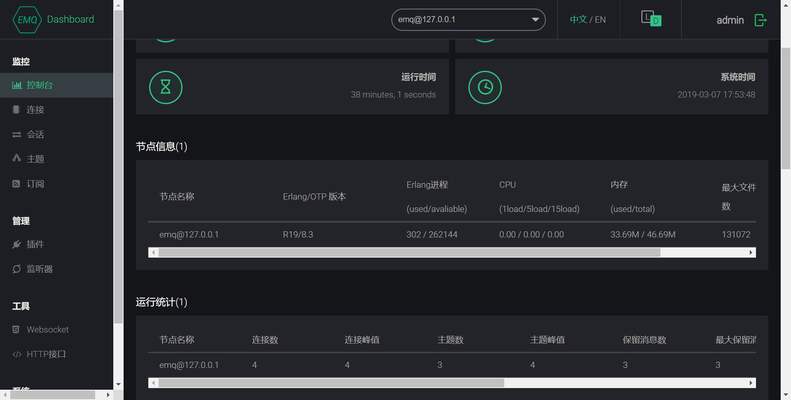

EMQX部署在Window系统
EMQX
使用
EMQX
- 打开 PowerShell窗口，建议是使用管理员模式
- window配置参考
- 打开网页控制台
- localhost:18083
- 用户名: admin
- 密码：public

MQTT-BOX
创建客户端，如果是本地服务器记得关闭防火墙


TOPIC监听
服务器主题
监听服务器的主题，而非自己创建的，需要监听服务器主题失败，那么需要在对应的文件安装目录的*etc目etc/acl.conf *下修改默认访问规则
-
1
2
3
4
5
6
7
8
9
10
11
12%% 允许'dashboard'用户订阅 '$SYS/#'
{allow, {user, "dashboard"}, subscribe, ["$SYS/#"]}.
%% 允许本机用户发布订阅全部主题
{allow, {ipaddr, "127.0.0.1"}, pubsub, ["$SYS/#", "#"]}.
%% 拒绝用户订阅'$SYS#'与'#'主题
%% 把deny 改为 allow即可
{deny, all, subscribe, ["$SYS/#", {eq, "#"}]}.
%% 上述规则无匹配，允许
{allow, all}. -
EMQ X Broker 上下线状态主题：
上线主题：$SYS/brokers/节点/clients/客户端id/connected
下线主题：$SYS/brokers/节点/clients/客户端id/disconnected
1）
、 可分别指定具体节点名、设备ClientID 
2）支持’+’、‘#’通配符
+是后面单个二级话题#是通配后面所有次级话题
修改了配置一定要重启EMQX服务器
备注
- 本文链接：https://www.wl960127.top/posts/108/
- 版权声明：本站内容均为个人学习笔记,不涉及商业用途，仅提供学习参考,第三方摘录已署名链接,未署名请评论添加,转载署名来源即可。
分享